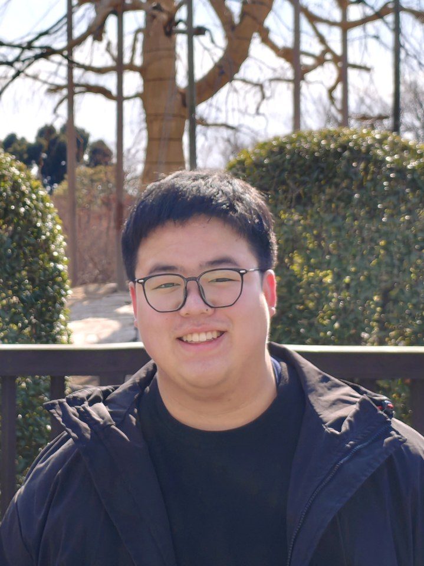

FIRST Robotics Competition
Engineering lead
I led engineering for my school’s robotics team and worked on robot controls, 3D modeling, and CNC fabrication. Our team finished second at the Türkiye Regional.
Duke Kunshan University · Class of 2030
I’m interested in robotics, especially humanoid robots. I want to bring robots into human society as general-purpose workers that can perform a wide range of tasks efficiently.

I’m a member of the Edge Intelligence Robotic Group at Duke Kunshan University. The group studies how robots combine sensor inputs such as vision and touch, learn to act, and share control with people.
I’m also interested in AI product design and what makes intelligent systems reliable and accessible in everyday use.
Explore the Edge Intelligence Robotic GroupEngineering lead
I led engineering for my school’s robotics team and worked on robot controls, 3D modeling, and CNC fabrication. Our team finished second at the Türkiye Regional.
High school graduation project
For my high school graduation project, I designed an electrode based on the NACA 66 airfoil to improve gas–liquid mixing. I evaluated the design with fluid simulations and physical experiments.
Debate society president and team captain
I served as debate society president and school team captain. Our team finished second at a national high school debate competition.